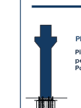
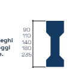
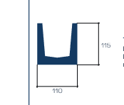
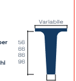
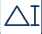
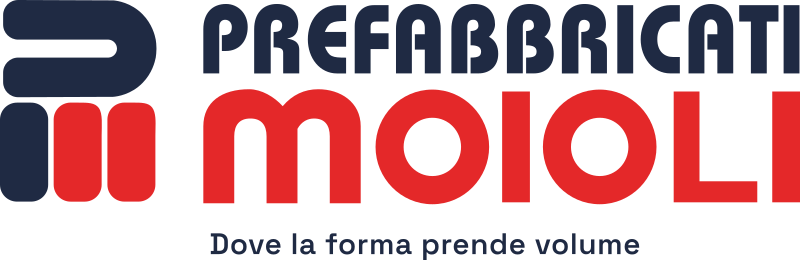

FACCIATA ESTERNA — 4 ante da 208,4 × 275,9 mm — piega a portafoglio834 × 276 mm

Via F.lli Kennedy 24
24060 Bagnatica (BG)
Tel 035 681239
info@prefabbricatimoioli.it
www.prefabbricatimoioli.it
24060 Bagnatica (BG)
Tel 035 681239
info@prefabbricatimoioli.it
www.prefabbricatimoioli.it
FACCIATA INTERNA — apertura a foto piena, numeri chiave, soluzioni, componenti e dati834 × 276 mm
Geometria e prestazioni
R180'
Resistenza al fuoco estendibile
4%
Pendenza di copertura
235 cm
Altezza massima trave a “I”
96 cm
Altezza massima arcareccio
Prospetto trasversale tipo
Vantaggi
Grandi luci libere
Pilastri interni ridotti
Resistenza al fuoco
Nodi sismici certificati
Fotovoltaico e lucernari
Componenti e dati tecnici

Pilastro con armatubo
Mensole per appoggio travi.

Travi a “I”
Impieghi centrali, appoggi speciali a scomparsa.

Travi a “U”
Ampio invaso per la raccolta delle acque.

Arcareccio
Portante secondario, altezza in funzione dei carichi.

Altezza trave “I”
90 · 110 · 140 · 180 · 235 cm
Altezza arcareccio
56 · 66 · 86 · 96 cm
Pendenza copertura
4%
Nodi sismici
Certificati
Resistenza al fuoco
Da R60' · R90' a R120', fino a R180'
Maglia strutturale
A seconda della necessità
QR
segnaposto
modello 3D
segnaposto
modello 3D
scopri la soluzione.
Inquadra il codice per vedere il modello 3D del sistema applicato a un edificio.

Dove la forma prende volume